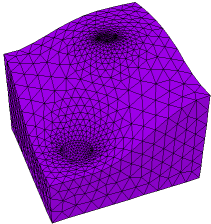
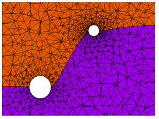

|
twoz_import |

  
|
|
twoz_import |
|
{ TWOZ_IMPORT.PDE
This problem constructs two non-coplanar spheres inside a box using an extrusion
surface generated by TWOZ_EXPORT.PDE, which must be run before this problem.
The domain consists of three layers.
layer 1 is the space below the spheres
layer 2 contains the sphere bodies, and is of zero thickness outside the spheres
layer 3 is the space above the spheres
The sphere interiors are Void, and are thus excluded from analysis. You could just as
well fill them with material if you wanted to model the insides.
The bounding surfaces of layer 2 are specified as a default surface read from a
TRANSFER, over-ridden by regional expressions within the (X,Y) extent of each sphere.
Click "Controls->Domain Review" to watch the mesh construction process.
See TWOZ_DIRECT.PDE and TWOZ_PLANAR.PDE for other methods of treating spheres
with centers on differing Z coordinates.
}
title 'Two Spheres in 3D'
coordinates cartesian3
variables u
definitions { dielectric constant of box filler (vacuum?) } K = 1 box = 1 { bounding box size }
{ read sphere specs from file, to guarantee that they are the same as those in surfgen } #include "sphere_spec.inc"
{ sphere shape functions } sphere1_shape = SPHERE ((x1,y1,0),R1) sphere2_shape = SPHERE ((x2,y2,0),R2)
{ read dividing surface generated by surfgen script } TRANSFER("two_sphere.xfr",zbottom) ztop = zbottom
equations U: div(K*grad(u)) = 0
extrusion surface "box_bottom" z=-box surface "sphere_bottoms" z = zbottom surface "sphere_tops" z = ztop surface "box_top" z=box
boundaries {insulating boundaries top and bottom } surface "box_bottom" natural(u) = 0 surface "box_top" natural(u) = 0 |
 |
Region 1 { The bounding box }
start(-box,-box) line to (box,-box) to (box,box) to (-box,box) to close
limited region 2 { sphere 1 }
mesh_spacing = R1/5 { force a dense mesh on the sphere }
zbottom = Z1-sphere1_shape { shape of surface 2 in sphere 1}
ztop = Z1+sphere1_shape { shape of surface 3 in sphere 1}
layer 2 void
surface 2 value(u)=V1 { specify sphere1 voltage on top and bottom }
surface 3 value(u)=V1
start (x1+R1,y1)
arc(center=x1,y1) angle=360
limited region 3 { sphere 2 }
mesh_spacing = R2/5 { force a dense mesh on the sphere }
zbottom = Z2-sphere2_shape { shape of surface 2 in sphere 2}
ztop = Z2+sphere2_shape { shape of surface 3 in sphere 2}
layer 2 void
surface 2 value(u)=V2 { specify sphere2 voltage on top and bottom }
surface 3 value(u)=V2
start (x2+R2,y2)
arc(center=x2,y2) angle=360
plots
grid(x,y,z)
grid(x,z) on y=y1 paintregions as "Y-cut through lower sphere"
contour(u) on y=y1 as "Solution on Y-cut through lower sphere"
grid(x,z) on y=y2 paintregions as "Y-cut through upper sphere"
contour(u) on y=y2 as "Solution on Y-cut through upper sphere"
grid(x*sqrt(2),z) on x-y=0 paintregions as "Diagonal cut through both spheres"
contour(u) on x-y=0 as "Solution on Diagonal cut through both spheres"
end
Page url: index.html?usage_3d_domains_two_spheres_twoz_import.html